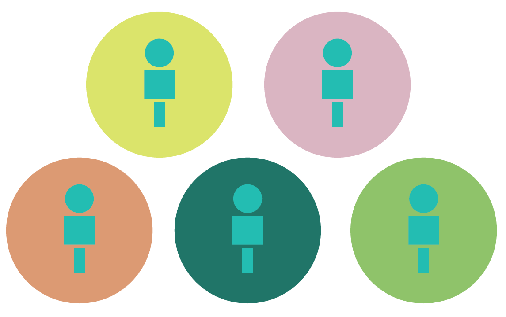

CONTENT
PERSONALIZATION
in a digital world.
We live in a world full of varying opinions and experiences. Our opinions are formed by experience, so therefore there is not a single person who shares identical perspectives with another. With the addition of social media, we have the ability to build social networks with people around the world; and yet, more often than not we connect to people who are in similar geographic and demographical groupings, and our social networks end up reflecting opinions that are similar to our own.
This causes a divide between people, and it often becomes difficult for people to be able to understand and empathize with a perspective that deviates too much from their own.

Content personalization is a marketing strategy employed by many websites, including social media, that shows specific information to a consumer based on what the user is likely to click on and interact with. In the case of social media, personalization reinforces opinions and perspectives held by the individual, and causes existing divisions to widen.
